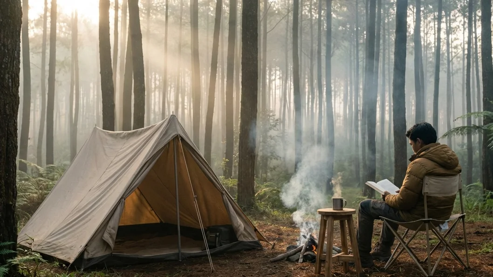

1. Kebutuhan Mendesak Akan Healing dari Kehidupan Urban
Menghadapi rutinitas yang monoton, tenggat waktu pekerjaan yang seakan tiada henti, serta bisingnya deru kendaraan di jalanan kota besar seringkali membuat pikiran kita mencapai titik didih. Kelelahan mental atau burnout menjadi epidemi yang tak terhindarkan bagi masyarakat urban saat ini. Di titik inilah, pencarian terhadap ruang tenang menjadi sebuah kebutuhan yang teramat mendesak. Melarikan diri dari lanskap beton menuju rimbunnya dedaunan hijau bukan sekadar tren gaya hidup, melainkan sebuah terapi pemulihan kewarasan jiwa yang esensial.
Jika Anda sedang merencanakan sebuah pelarian singkat yang bermakna, maka topik mengenai Menepi Sejenak di Area Kemah Hutan Pinus Batu: Healing Terbaik di Tengah Rimbunnya Alam Malang adalah literatur yang tepat untuk Anda baca. Kota Batu, yang diberkahi dengan kontur pegunungan tropis yang teramat asri, menawarkan sebuah ekosistem alam yang mampu memeluk erat segala keresahan Anda. Melalui artikel panjang yang menenangkan ini, kita akan menyelami sensasi kedamaian yang ditawarkan oleh kanopi hutan pinus, ragam aktivitas relaksasi yang bisa dilakukan, hingga panduan memilih lokasi perkemahan yang menjamin ketenangan privasi Anda tanpa harus mengorbankan kenyamanan fisik.
2. Daya Tarik Utama Hutan Pinus Batu untuk Healing
Berkemah di bawah tegakan pohon pinus menyuguhkan vibrasi energi yang amat sangat berbeda dibandingkan dengan padang sabana yang terbuka. Hutan pinus adalah sebuah tempat suci (*sanctuary*) alami yang meredam kebisingan dunia luar.
Kesejukan Udara Bebas Polusi
Keuntungan paling instan yang akan langsung dirasakan oleh paru-paru Anda saat menjejakkan kaki di perbukitan Kota Batu adalah kualitas udaranya. Berada pada elevasi ketinggian di atas 1.000 meter dari permukaan laut, udara di kawasan hutan pinus ini terasa amat sejuk, bersih, dan sama sekali terbebas dari partikel polusi maupun emisi karbon kendaraan. Setiap tarikan napas panjang yang Anda lakukan di sini adalah proses detoksifikasi alami bagi sistem pernapasan yang selama ini tersiksa oleh debu perkotaan.
Aroma Terapi Alami (Fitonsida) dari Pinus
Pernahkah Anda menyadari mengapa berjalan di antara pohon pinus selalu membuat hati terasa tenteram? Secara ilmiah, daun jarum dan getah pohon pinus melepaskan senyawa kimia alami ke udara yang disebut sebagai fitonsida (minyak atsiri). Menghirup senyawa ini ibarat melakukan sesi aromaterapi berskala raksasa. Berbagai penelitian medis membuktikan bahwa menghirup udara yang kaya akan fitonsida dapat menurunkan secara drastis kadar hormon kortisol (pemicu stres), menurunkan tekanan darah tinggi, serta meningkatkan daya tahan (sistem imun) tubuh manusia.
BACA JUGA (Keindahan Alam):
3. Sensasi Menginap di Tengah Hutan Pinus
Merasakan keindahan hutan pinus selama satu atau dua jam kunjungan saja belumlah cukup untuk mengobati kepenatan. Anda harus bermalam dan menyatu dengan ritme alam tersebut.
Suasana Pagi Berkabut dan Ray of Light
Bayangkan Anda terbangun di pagi buta. Saat Anda membuka pintu tenda, kawasan perkemahan masih diselimuti oleh kabut putih yang tebal dan dingin. Perlahan namun pasti, matahari mulai naik dan sinarnya berusaha menembus celah-celah daun pinus. Tabrakan antara cahaya keemasan fajar dengan partikel kabut ini menciptakan pilar-pilar cahaya vertikal yang teramat magis, sebuah fenomena yang diabadikan oleh para fotografer sebagai Ray of Light. Duduk menyesap secangkir kopi panas sambil menyaksikan pertunjukan cahaya ini adalah manifestasi sejati dari healing visual.
Malam Syahdu Ditemani Suara Alam
Saat sang surya terbenam, suasana hutan pinus akan berubah menjadi teramat syahdu. Hembusan angin malam yang bergesekan dengan jutaan daun jarum pinus akan menciptakan suara gemerisik lembut bak musik instrumental alami (white noise). Di sinilah momen yang tepat untuk melupakan sejenak beban pekerjaan. Duduklah di sekitar api unggun yang menyala, rasakan kehangatannya, dan biarkan diri Anda terhanyut dalam kesunyian malam yang mendamaikan batin.

Menyisihkan waktu untuk membaca buku favorit di bawah naungan pohon pinus yang sejuk adalah cara terbaik untuk melatih ketenangan pikiran dan melepaskan stres. (Dokumentasi: Batu Sunrise Camp)4. Menjaga Harmoni dengan Alam Tanpa Repot
Banyak warga perkotaan yang rindu pada alam, namun enggan untuk berkemah karena membayangkan betapa merepotkannya harus menyiapkan peralatan dan mendirikan tenda yang rumit.
Opsi Comfort Camping untuk Pemula
Di era modern ini, pariwisata alam telah berevolusi dengan amat pesat. Anda tidak perlu lagi menjadi seorang pecinta alam garis keras untuk bisa tidur nyenyak di tengah hutan. Para pengelola wisata kini mengusung konsep Comfort Camping (kemah nyaman), di mana seluruh infrastruktur tidur—mulai dari tenda double layer tebal, matras penahan dingin, hingga kantong tidur (sleeping bag) polar yang wangi—telah disiapkan sepenuhnya oleh pihak pengelola. Anda dan keluarga benar-benar hanya perlu datang membawa pakaian ganti.
Menyatu dengan Alam dengan Fasilitas Memadai
Menepi ke alam bukan berarti Anda harus menahan diri dari kebutuhan dasar sanitasi. Berbagai area perkemahan premium di Batu kini telah diintegrasikan dengan fasilitas bangunan toilet duduk permanen yang sangat bersih, dialiri air jernih tanpa henti, dan terang benderang di malam hari. Hal ini memastikan bahwa proses healing Anda tidak akan dirusak oleh rasa cemas atau rasa tidak nyaman saat harus ke kamar kecil di waktu subuh.
BACA JUGA (Kenyamanan Berkemah):
5. Aktivitas Healing di Area Kemah Hutan Pinus Batu
Jangan biarkan waktu berharga Anda berlalu hanya dengan menggulir linimasa (*scrolling*) layar smartphone di dalam tenda. Lakukanlah aktivitas yang dapat merestorasi energi Anda.
Forest Bathing (Mandi Hutan) dan Meditasi
Praktik Forest Bathing atau dalam bahasa Jepang disebut *Shinrin-yoku* bukanlah aktivitas mandi dengan air, melainkan membenamkan seluruh indera perasa Anda ke dalam atmosfer hutan. Cobalah berjalan santai tanpa alas kaki di atas rumput berembun pada pagi hari, pejamkan mata, dengarkan suara kepakan sayap burung, dan rasakan hembusan angin yang menyentuh kulit wajah. Lakukan meditasi pernapasan ringan selama 15 menit. Aktivitas ini diklaim sebagai obat penenang alami paling mujarab bagi jiwa yang kelelahan.
Hammocking dan Digital Detox
Bawalah sebuah hammock (tempat tidur gantung kain) dan ikatkan dengan aman di antara dua batang pinus yang kokoh. Berayunlah dengan pelan di bawah kanopi rindang sambil menikmati buku bacaan yang selama ini tertunda. Yang terpenting, lakukanlah digital detox. Matikan koneksi internet ponsel Anda untuk sementara waktu, berhentilah mengecek pesan grup pekerjaan, dan alihkan fokus Anda sepenuhnya pada keagungan dan keindahan alam yang ada di depan mata Anda saat ini.
6. Rekomendasi Spot: Batu Sunrise Camp
Jika Anda mencari lokasi yang dapat memberikan pengalaman healing secara utuh dan paripurna seperti yang telah dijabarkan di atas, Batu Sunrise Camp adalah destinasi prioritas yang wajib masuk ke dalam daftar liburan Anda.
Lokasi Strategis di Tengah Hutan Pinus
Area perkemahan eksklusif ini menyajikan kombinasi tata ruang yang amat sempurna. Lahan ground-nya diapit oleh rimbunnya hutan pinus yang berjejer amat rapi, memberikan perlindungan dari angin dan panas matahari. Menariknya, kontur lahan ini dirancang menghadap lurus ke arah lembah yang terbuka bebas, sehingga para tamu tidak hanya dimanjakan oleh sejuknya pinus, tetapi juga disuguhi panorama spektakuler matahari terbit (sunrise) dan pendaran lautan lampu kota (city lights) di malam harinya.
Privasi dan Kenyamanan Maksimal
Berorientasi pada pelayanan wisata anti-repot, Batu Sunrise Camp menjamin privasi setiap tenda agar tamu bisa beristirahat dengan damai. Tidak ada aktivitas hura-hura yang mengganggu. Pengelola telah menyewakan paket tenda All-In berfasilitas tidur tebal yang sangat aman. Dilengkapi pula dengan dukungan fasilitas toilet yang amat bersih, ketersediaan colokan listrik untuk keadaan darurat, dan area parkir yang sangat ramah mobil (*campervan friendly*), menjadikan proses healing Anda di sini benar-benar murni dan tanpa hambatan logistik sedikitpun.
7. Kesimpulan
Memaksakan diri untuk terus bekerja layaknya mesin tanpa memberikan jeda bagi jiwa adalah sebuah kesalahan fatal. Menghabiskan waktu dengan Menepi Sejenak di Area Kemah Hutan Pinus Batu: Healing Terbaik di Tengah Rimbunnya Alam Malang adalah sebuah investasi emosional yang amat berharga bagi diri Anda sendiri. Anda akan disuguhi oleh udara kaya oksigen yang menyehatkan paru-paru, wewangian terapi alami dari pinus yang menenangkan, serta panorama visual berupa Ray of Light pagi yang amat magis. Terlebih lagi, dengan hadirnya pengelola perkemahan premium layaknya Batu Sunrise Camp yang menjamin keamanan tenda dan ketersediaan fasilitas MCK yang memadai, kegiatan berkemah kini telah menjadi sarana rekreasi eksklusif yang sangat mudah dan nyaman untuk diakses. Kemasi barang secukupnya, tinggalkan sejenak beban pekerjaan di kota, dan jemputlah kembali kebahagiaan serta kedamaian batin Anda di pelukan perbukitan Kota Batu.